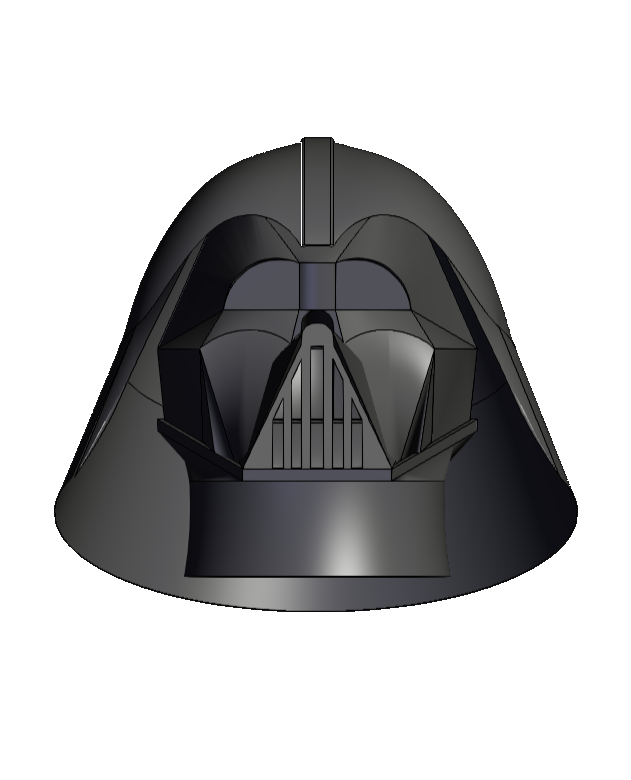
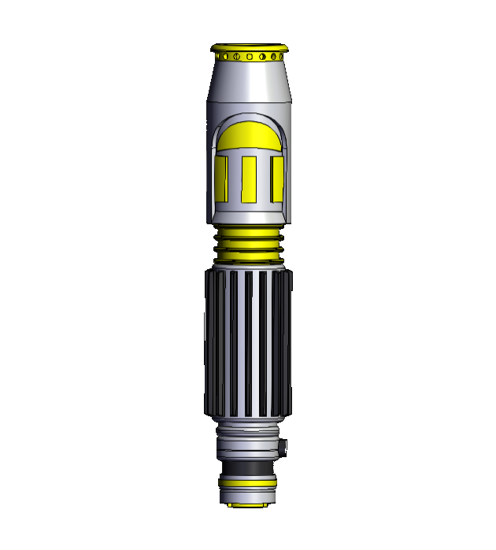
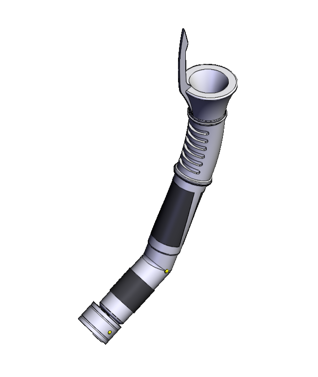
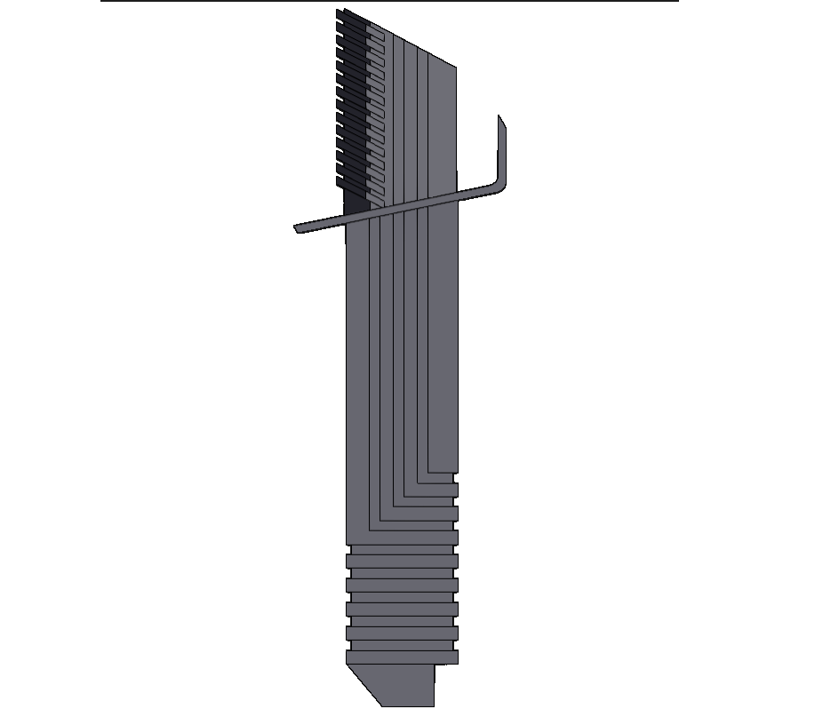
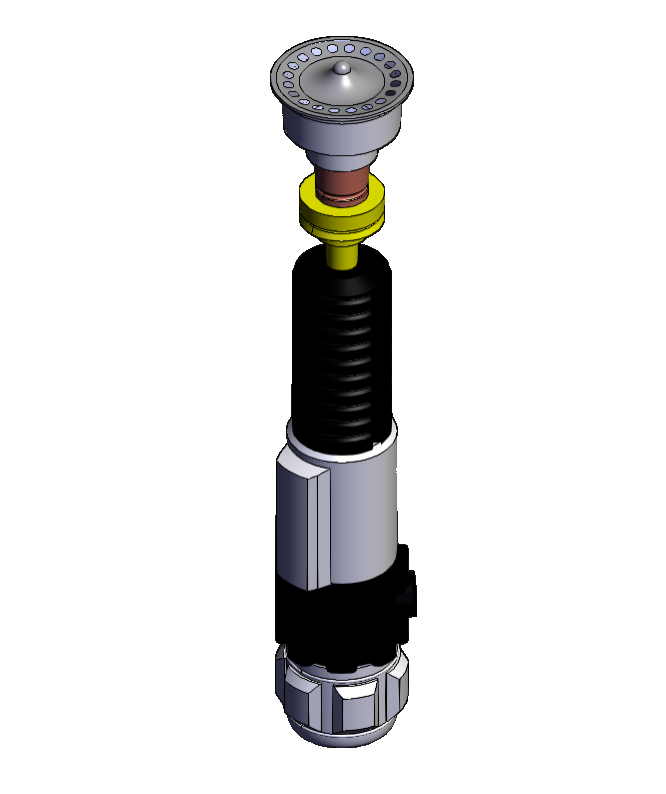
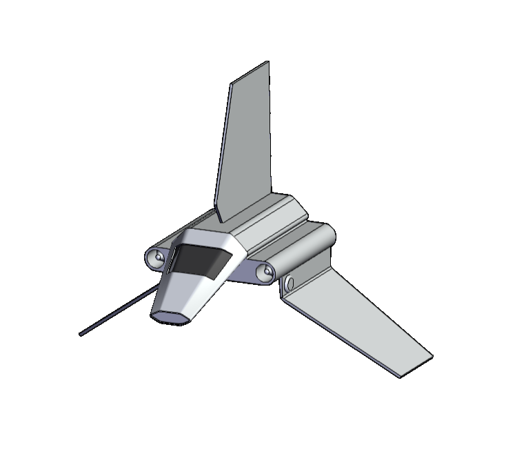

Grabcad

Overview
I have kept an active GrabCad account since I was a Freshman in high school and have over 12 detailed models with over 1200 downloads in total. I have kept this as both a digital archive and a gallery of what I am capable of in a less traditional design role, to communicate the technical process and artistic touch that thoughtful design is capable of.
Skills
-

CAD
-
Simulation
-
CAM
Roles
- Lead Designer
- Lead Prototyper
- Sole Publisher
Tools
- Solidworks
- AutoCad
- Revit





Models Over the Years
There is a plethora of what I love in what I design and publish because I believe in pursuing engineering as a hobby as much as I do as a career. CAD is art to me and I have never been the best painter or illustrator, so being able to design my own files and print them gives me joy. Beyond the simple pleasure of creating art, I believe in learning with what you love as much as much I believe in making what you love. I learned many of the more advanced qualities of Solidworks and AutoCad by seeing a lightsaber design, or a helmet design I liked, and how attempting to replicate its design. Not only did it teach me advanced techniques like surfacing, wrapping, and basic Finite Element Analysis, but by playing with the models I’ve created, it taught me how to think like a designer. I learned how to break down problems and create simple replicable steps to streamline the design process.

Learning
I have learned both technical skills like Finite Element Analysis, fluid simulation, and surfacing from modeling, and less technical skills like translating abstract ideas or images into concrete designs.